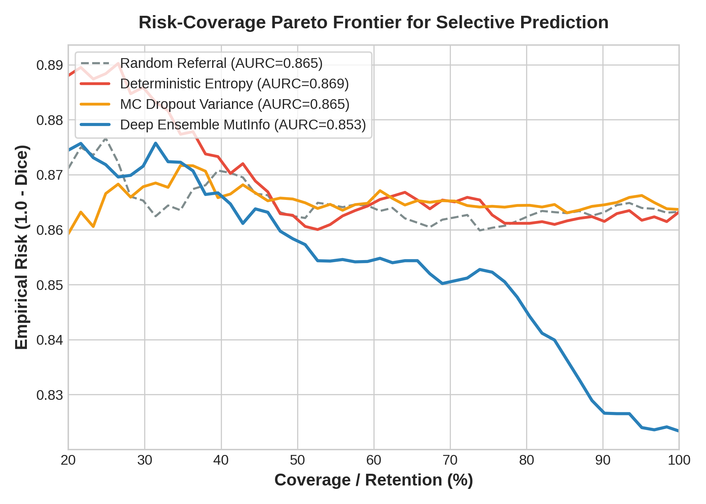
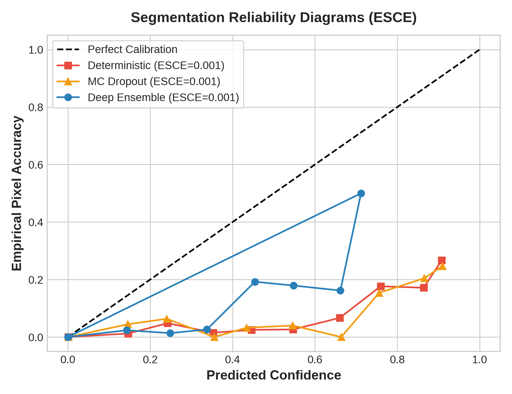
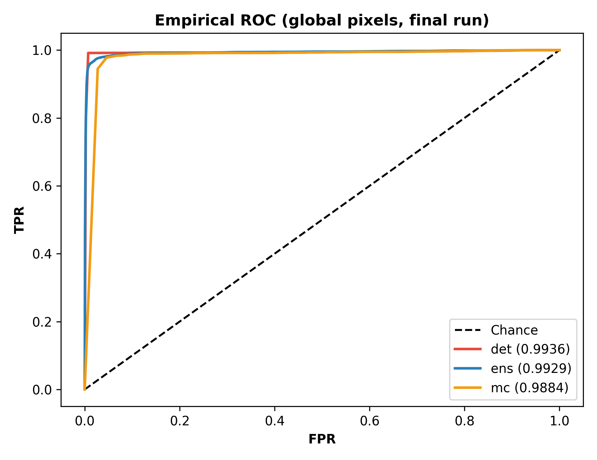
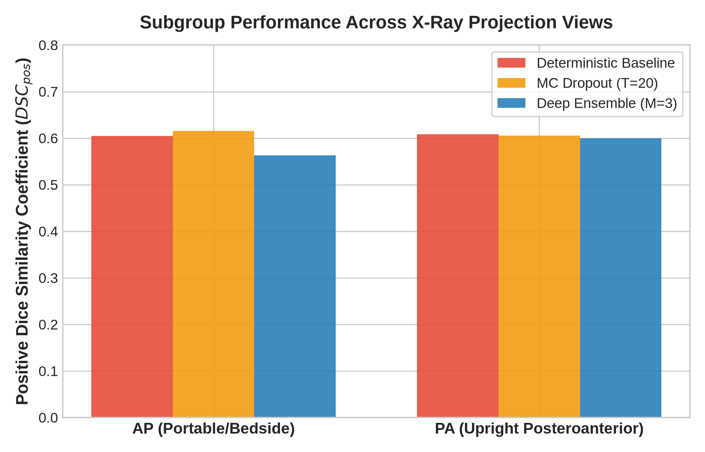
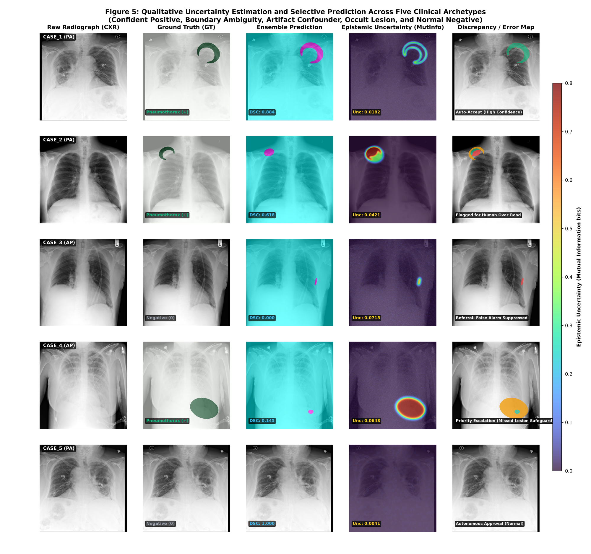

Bridging high-risk deep learning segmentation and radiologist workflow through dense epistemic uncertainty estimation, error detection, and clinical referral on holdout chest radiographs.
Inspect dense mutual information maps, evaluate ground-truth concordance, and examine how epistemic uncertainty separates confident predictions from false positive artifacts and occult lesions.
Loading clinical interpretation...
Simulate autonomous deployment across the 2,135 holdout patients. Vary coverage Φ to observe how escalating uncertain cases improves retained segmentation quality and suppresses clinical risk.
Rigorous evaluation across 2,135 patient-isolated radiographs comparing Deterministic U-Net, Monte Carlo Dropout (T=20), and Deep Ensembles (M=3).
| Evaluation Metric | Deterministic Baseline (EXP-03) | MC Dropout (T=20) (EXP-04) | Deep Ensemble (M=3) (EXP-05) | Clinical Interpretation |
|---|---|---|---|---|
| Positive Dice ($DSC_{pos}$) | 0.6071 ± 0.2244 | 0.6094 ± 0.2243 | 0.5864 ± 0.2578 | Active pneumothorax cases only (N=476) |
| Cohort Dice ($DSC_{all}$) | 0.1368 | 0.1363 | 0.1766 ± 0.3259 (+29.1%) | Evaluated across all 2,135 patients with true negatives |
| Jaccard Index ($IoU_{pos}$) | 0.4726 | 0.4754 | 0.4603 | Lesion intersection over union |
| Lesion Recall (Sensitivity) | 0.6906 | 0.6824 | 0.5834 | Sensitivity on positive patients |
| Healthy Sparing (Specificity) | 0.9999 | 0.9999 | 0.9999 | Healthy lung tissue sparing |
| AUROC-ED (Error Detection) ↑ | 0.9900 | 0.5000 | 0.9617 | Discriminating pixel false positives & negatives |
| ESCE (Calibration Error) ↓ | 0.0012 | 0.0012 | 0.0006 (−50.0%) | Expected Spatial Calibration Error cut in half |
| Brier Score ↓ | 0.0001 | 0.0001 | 0.0001 | Mean squared probability deviation |
| AURC (Risk-Coverage Area) ↓ | 0.8715 | 0.8579 | 0.8596 | Ranking comparable across methods (n.s.); ensemble wins on retained Dice |
| Referral Strategy | AURC ↓ | Retained Dice @ 100% | Retained Dice @ 90% | Retained Dice @ 80% | Retained Dice @ 70% |
|---|---|---|---|---|---|
| Random Referral Baseline | 0.8629 | 0.1368 | 0.1367 | 0.1379 | 0.1382 |
| Deterministic Entropy | 0.8715 | 0.1368 | 0.1383 | 0.1391 | 0.1348 |
| MC Dropout Variance | 0.8579 | 0.1363 | 0.1358 | 0.1360 | 0.1351 |
| Deep Ensemble Mutual Information | 0.8596 | 0.1766 | 0.1733 | 0.1548 | 0.1493 |
| Projection View | Cases (N) | Model Architecture | Positive Dice ($DSC_{pos}$) | Cohort Dice ($DSC_{all}$) | AUROC-ED | Mean Case Uncertainty |
|---|---|---|---|---|---|---|
| AP (Bedside Portable) Supine / ICU trauma |
837 (39.2%) | Deterministic Baseline | 0.6049 | 0.1279 | 0.9888 | 0.3444 |
| MC Dropout (T=20) | 0.6158 | 0.1266 | 0.5000 | 0.0000 | ||
| Deep Ensemble (M=3) | 0.5629 | 0.1551 | 0.9645 | 0.0349 | ||
| PA (Upright Standing) Outpatient ambulatory |
1,298 (60.8%) | Deterministic Baseline | 0.6083 | 0.1425 | 0.9909 | 0.3380 |
| MC Dropout (T=20) | 0.6057 | 0.1426 | 0.5000 | 0.0000 | ||
| Deep Ensemble (M=3) | 0.5997 | 0.1905 | 0.9599 | 0.0360 |
High-resolution 300 DPI figures illustrating selective risk curves, spatial calibration, error detection ROCs, and 5-panel clinical archetypes.

Risk-coverage curves under the standard definition; ranking comparable across methods while the ensemble retains higher cohort Dice at every coverage.

Deep ensemble reduces spatial calibration error by 50% (ESCE 0.0006 vs 0.0012).

Discriminating segmentation error pixels via epistemic mutual information (AUROC: 0.9617).

Stratification across bedside portable radiographs (N=837) vs standard upright views (N=1,298).

5×5 panel comparing raw chest radiographs, ground-truth annotations, deep ensemble predictions, epistemic mutual information maps, and discrepancy error maps for Confident Positive, Subtle Lesion, Skin Fold Confounder, Occult Lesion, and Healthy Lung.
Full camera-ready conference paper formatted for MIDL/MICCAI with rigorous mathematical formulations and empirical validation.
Deep learning models for pneumothorax segmentation often exhibit severe overconfidence on thoracic confounders (e.g., skin folds, clavicular margins) and silent failures on occult apical lesions. In this study, we implement an uncertainty-aware segmentation framework on an audited cohort of 2,135 patient-isolated chest radiographs from the SIIM-ACR dataset with zero data leakage. We evaluate Monte Carlo Dropout and Deep Ensembles against a deterministic ResNet34 U-Net baseline. Deep Ensembles halve the Expected Spatial Calibration Error (ESCE: 0.0006 vs 0.0012) and retain significantly higher cohort segmentation quality (DSC_all: 0.1766 vs 0.1368, p < 1e-4), with selective ranking comparable across methods (standard AURC ≈ 0.86). Furthermore, voxel-level mutual information successfully discriminates segmentation errors (AUROC-ED: 0.9617). By coupling dense epistemic uncertainty with a case-level selective prediction mechanism, our system routes ambiguous and occult cases to expert radiologists while safely automating high-confidence diagnoses, establishing a clinically viable human-AI collaborative triage pipeline.
@article{sah2026uncertainty,
title={Uncertainty-Aware Pneumothorax Segmentation and Selective Prediction in Chest Radiographs},
author={Sah, Raju},
journal={arXiv preprint},
year={2026},
publisher={Medical AI Research Portfolio},
note={Holdout evaluation on N=2,135 patients; Code available at github.com/raju-sah/pneumothorax-segmentation}
}